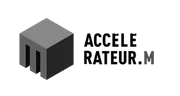

Confiance
Nos artisans sont qualifiés et sensibilisés à l'intervention auprès de personnes vulnérables.
Chaque Majeur Protégé a le droit de vivre dans un logement salubre et entretenu.
Plateo est un service de coordination de travaux créé à Marseille par deux ingénieurs du BTP, dédié exclusivement aux MJPM et aux Majeurs Protégés.


Histoire
Plateo a été créé par 2 ingénieurs BTP de formation (Polytech Marseille). Nos expériences dans des bureaux d'études nous ont permis de développer notre expertise en travaux, en collaborant sur des projets variés.
Suite à une rencontre avec un MJPM, nous avons compris les problématiques rencontrées par ces professionnels lorsqu'il faut entreprendre des travaux dans les logements des Majeurs Protégés.
Naturellement, nous nous sommes spécialisés dans les travaux pour les personnes disposant d'une mesure de protection.
Aujourd'hui, nous proposons notre service uniquement aux MJPM et aux Majeurs Protégés.
Notre mission est de transformer radicalement l'expérience des travaux de rénovation et d'entretien, en garantissant un environnement sain et sécurisé pour les Majeurs Protégés.

Mission
Nous comprenons que les Mandataires Judiciaires à la Protection des Majeurs ont des missions très variées, regroupant plusieurs domaines d'expertise.
Les MJPM sont entourés de divers prestataires historiques : avocats, banques, assurances, gestionnaires de patrimoines, agences immobilières...
Cependant, il n'y a pas d'équivalent pour les travaux dans les logements.
Ces missions prennent un temps considérable et sont souvent sources de frustrations.
Nous offrons donc un accompagnement personnalisé et transparent.

Promesse
La promesse de Plateo est simple : vous apporter sérénité et gain de temps, en gérant les travaux de A à Z, de l'analyse des besoins jusqu'à l'intervention finale.
Nous vous informons à chaque étape, sur la planification des travaux, l'avancement et les coûts associés.
Plateo est un interlocuteur unique, qui collabore avec des artisans du BTP.
Spécialistes des interventions chez les Majeurs Protégés, nous souhaitons mettre notre expertise à disposition des acteurs de la protection des majeurs.
Valeurs
Nos artisans sont qualifiés et sensibilisés à l'intervention auprès de personnes vulnérables.
Chaque chantier est encadré, et vous êtes informé à chaque étape.
Nous respectons l'engagement des professionnels de la protection et les besoins de leurs bénéficiaires.
Notre équipe
Président
« En découvrant les difficultés des mandataires face aux travaux chez leurs bénéficiaires, j'ai voulu comprendre leurs besoins et y apporter une réponse adaptée. »
Expériences :
Directeur technique
« J'ai rejoint Plateo par conviction, pour mettre mon expertise technique au service d'un projet utile socialement. »
Expériences :
Coordinatrice des opérations
« Contribuer au bien-être d'un public vulnérable et méconnu, en prenant soin de son logement et de son cadre de vie. »
Expériences :
Ils nous accompagnent

Questions fréquentes
Une autre question ? Contactez-nous.
Les prestations d'accompagnement et d'étude sont facturées par Plateo.
Les petits travaux, proposés dans certains départements et ne relevant pas de la garantie décennale, peuvent être facturés directement au bénéficiaire. Pour les travaux couverts par la garantie décennale, c'est l'entreprise qui facture au nom du bénéficiaire : son assurance couvre alors l'ouvrage pendant dix ans.
Plateo ne reçoit aucune subvention publique : le service est financé uniquement par ses utilisateurs.
Dans le cadre de l'ESS (Économie Sociale et Solidaire), nous appliquons une politique de faibles marges pour ne pas impacter les bénéficiaires les plus précaires.
Plateo est une société commerciale. Nous avons fait le choix de ne pas dépendre de subventions ou autres financements pour assurer une continuité du service sur le long terme.
Ils dépendent de la nature du problème et de la disponibilité des artisans. Nous nous engageons à vous communiquer les disponibilités le plus rapidement possible.
Des prestations de qualité, des délais respectés, un suivi avant et après les travaux, une communication claire, le respect des normes de sécurité, et des devis clairs et détaillés.